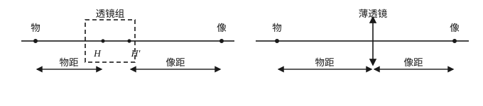
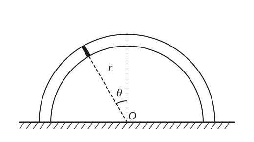
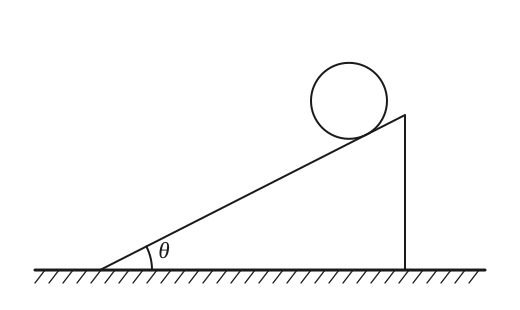
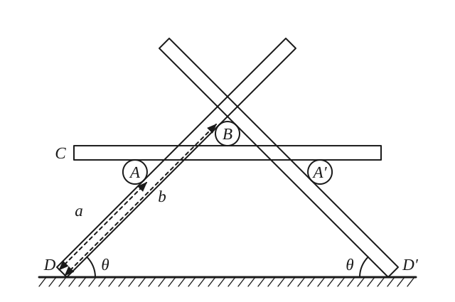
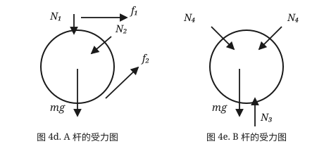
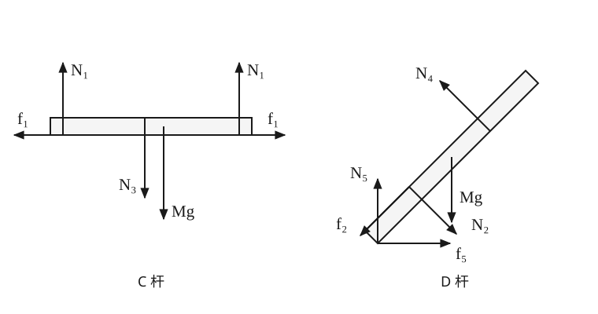

复赛小记（上）
写在前面
这个博客大概是用来记录我自己想写的东西的——随笔、思考，又或者仅仅是某天突然想明白的好事一小件。
最近一年一度的物理复赛又要来了。作为三年前从赛场上走下来的人，难免想回忆一下自己考复赛是什么感觉。写一点当年在赛场上的感想和题目的解析，也算是一种对于过去的怀念吧。
一、手机透镜组的主点与等效焦距
在以下问题中，将手机镜头视为结构固定的共轴理想透镜组，可以证明其物像关系等效于一个凸透镜，可以利用薄透镜成像公式进行有关计算。与薄透镜不同的是，需要在光轴上确定一对参考点 H、H'（称为主点）作为计算物距、像距、焦距的起点，如图 1a 所示。本题所有成像光路都满足近轴条件。

（1）物体通过镜头成像时，由于透镜组封装在手机内部，在镜头结构与参数未知的情况下无法直接确定主点位置，因而无法直接用尺子测量物距 \(u\) 的具体数值。实验中，可以沿光轴前后移动与光轴垂直、长度为 \(l\) 的刻度尺，使其在物距为 \(u_1\) 和 \(u_2\) 的两个位置分别成像，测量出刻度尺移动的距离 \(s = u_2 - u_1\) 和对应像的长度大小 \(l_1\)、\(l_2\)。求：
（i）该镜头的等效焦距 \(F\)（用测得的 \(l\)、\(l_1\)、\(l_2\) 和 \(s\) 表示）；
（ii）物距 \(u_1\)（用测得的 \(l\)、\(l_1\)、\(l_2\) 和 \(s\) 表示）。
（2）若透镜组由两个焦距分别为 \(f_1\) 和 \(f_2\) 的共轴薄凸透镜 1 和 2 组成，它们的光心分别为 \(O_1\) 和 \(O_2\)，间距为 \(d\)。物（实或虚）的光依次通过透镜 1 和 2 成像时，透镜组存在横向放大率为 \(+1\) 的一对物面和像面（称为主平面），它们与光轴的交点分别称为物方主点 H 和像方主点 H'。
（i）将 H 看作透镜 1 的"物"，求 H 相对于 \(O_1\) 的物距；将 H' 看作透镜 2 的"像"，求 H' 相对于 \(O_2\) 的像距。
（ii）透镜组成像时，物距、物方焦距从物方主点 H 算起，像距、像方焦距从像方主点 H' 算起，求物方焦距 \(F\) 和像方焦距 \(F'\)。
其实拿到这个题目之后最大的感觉就是：这玩意不就是难集的原题嘛hhh
在40届竞赛之前几何光学应该是有一段时间没有以这么大的篇幅出现在复赛试题中了，估计原因就是区分度不是很大。至少对于近轴条件下、理想共轴光具组的成像问题，学会这套理论后，处理起来就有了比较统一的思路。这道题目也就是一个理想光具组理论的介绍，新概念光学和难题集萃上都有相关的题目。当时通览全卷后也觉得这个题目很适合拿来作为第一道题去做，一是背景比较熟悉，对于最终结果有一个大致的预估，其二是计算量尚可，作为热身很合适。
难题集萃上应该是在下册光学部分第一章几何光学的题27-29有关于主面主点等理想光具组理论等的题目，这几道题还是很经典的，如果能够学会这几道题那么这个题也应该很轻松。下面一起来推一推具体的结果。
(1) 设刻度尺在物距 \(u_1\) 处成像的像距为 \(v_1\)，对等效凸透镜用成像公式：
由横向放大关系（像长与物长之比）：
同理，物距 \(u_2\) 的位置满足 \(u_2 = F\left(1 + \dfrac{l}{l_2}\right)\)。两式相减：
把 \(F\) 代回 \(u_1\) 的表达式：
那么其实这个第一问也就是一个初中的自招难度，相信只要是学习过一点自招的同学应该或多或少都了解过这个倒数公式：
\[ \frac{1}{u}+\frac{1}{v}=\frac{1}{f} \]
(2)(i) 设透镜 1 的物距、像距为 \(u_1\)、\(v_1\)，透镜 2 的物距、像距为 \(u_2\)、\(v_2\)，分别满足：
两镜的（带符号）横向放大率为 \(m_1 = -v_1/u_1\)、\(m_2 = -v_2/u_2\)，即 \(\dfrac{1}{m_1} = 1 - \dfrac{u_1}{f_1}\)、\(\dfrac{1}{m_2} = 1 - \dfrac{u_2}{f_2}\)。总放大率 \(m = m_1 m_2\)，故：
主平面处 \(m = +1\)。又透镜 1 的像成为透镜 2 的物，两光心距离为 \(d\)，即 \(u_2 = d - v_1\)，而 \(v_1 = \dfrac{u_1 f_1}{u_1 - f_1}\)。联立解出主点 H 相对于 \(O_1\) 的物距：
由光路可逆（或对称地把 H' 看作透镜 2 的"像"），H' 相对于 \(O_2\) 的像距：
这一问主要也就是需要搞懂一个放大率是带有符号这件事，剩下的计算方面也并不是很复杂，依序计算即可。
(2)(ii) 物距为无穷大（平行光入射）时，经透镜组成像的位置即像方焦点，此时 \(u_1 = \infty\)，\(v_1 = f_1\)，\(u_2 = d - f_1\)。代入透镜 2 成像公式得 \(v_{F'} = v_2 = \dfrac{(d-f_1)f_2}{d - f_1 - f_2}\)。像方焦距从 H' 算起：
由光路可逆，物方焦距 \(F = F'\)。
总结来看这道题目确实不是很复杂，在考场上能看到一个这样的题目对于稳定信心来说很有帮助，至少我看到这个题目之后是心中一阵窃喜。
二、半圆玻璃管中的活塞
题目
如图 2a，将一个粗细均匀、两端封闭的细玻璃管弯成半径为 \(r\) 的半圆环（玻璃管的横截面半径远小于 \(r\)），竖直固定于水平地面上，两端面与地面接触。玻璃管内有一个质量为 \(m\) 的活塞（金属片），活塞与管内壁紧密接触，两者之间的摩擦可忽略不计。活塞在半圆环内相对于竖直方向的位置记为 \(\theta\)。活塞两边管内各有 \(n\) 摩尔的理想气体，且其温度始终与外界温度 \(T\)（绝对温度）相同。已知重力加速度大小为 \(g\)，普适气体常量为 \(R\)，所有涉及的气体状态变化的过程均可视为准静态过程。

（1）当温度 \(T\) 高于某临界温度 \(T_c\) 时，玻璃管的正中央（\(\theta = 0\)）是活塞的稳定平衡位置。求临界温度 \(T_c\) 的表达式，并计算活塞在该平衡位置附近做微振动的圆频率；
（2）当温度 \(T = T_c\) 时，分析并判断活塞在玻璃管正中央时平衡的稳定性。解答如下几问时，可将 \(T_c\) 看作为已知参量，不必代入（1）中的结果；
（3）当 \(T < T_c\) 时，求活塞的稳定平衡位置与竖直方向的夹角 \(\theta_0\) 所满足的方程，并给出温度略小于 \(T_c\) 时 \(\theta_0\) 的近似表达式（保留至非零的最低阶）；
（4）当 \(T < T_c\) 时，求活塞在稳定平衡位置附近做微振动的圆频率 \(\omega_0\) 对 \(\theta_0\) 的依赖关系 \(\omega_0(\theta_0)\)（表达式中可含有上一问中的 \(\theta_0\) 参量，但不可包含 \(T\) 参量），并给出温度 \(T\) 略高于 \(T_c\) 和略低于 \(T_c\) 两种情况下，活塞微振动的圆频率对温度的依赖关系；
（5）当 \(T < T_c\) 时，假设活塞的初始速度近似为零，求活塞从正中央运动到可到达的角位置 \(\theta\) 处的角速度大小。
那这道题目实际上就是一个很具有普物风格的题目。从一个基本的模型出发，讨论不同参数关系情况下体系表现出的不同的行为，从稳定平衡到微振动，是一个结合了热学和力学的题目。总体上也很容易想到这类振动的题目有受力法和能量法两种方式求解，我们依次来看一看，首先看受力法：
受力法
设活塞偏离正中央的角度为 \(\theta\)。两侧气柱长度分别为 \(r(\pi/2 - \theta)\) 和 \(r(\pi/2 + \theta)\)，由理想气体状态方程，两侧压强为 \(p = nRT / V\)。活塞沿管切向的运动方程为：
(1) 当 \(|\theta| \ll 1\) 时展开保留到一阶：
正中央稳定要求加速度与位移方向相反，即 \(g - \dfrac{8nRT}{\pi^2 r m} < 0\)，所以临界温度：
此时活塞做简谐振动，圆频率：
(2) \(T = T_c\) 时保留到三阶，运动方程化为：
活塞受到正比于 \(\theta^3\) 的恢复力，所以正中央仍是稳定平衡位置。
这个式子展开的时候大概估计一下可以预想到前面的正弦项展开到第三阶应该是一个负号，后一项分子分母同乘 \(\pi^2+4\theta^2\) 后，保留至三阶时分母可以用 \(\pi^4\) 代替。在 \(T=T_c\) 时，两部分的一阶项恰好抵消，剩下的三阶项系数为负，所以是一个稳定平衡的位置。
(3) \(T < T_c\) 时，设稳定平衡位置在 \(\theta_0 \neq 0\) 处，该处合力为零：
整理得 \(\theta_0\) 满足的方程：
右端 \(f(\theta_0) = \left(\dfrac{\pi^2}{4} - \theta_0^2\right)\dfrac{\sin\theta_0}{\theta_0}\) 在 \(\theta_0 \in (0, \pi/2)\) 上单调递减，\(\theta_0 \to 0\) 时取最大值 \(\pi^2/4\)。所以方程有非零解的条件正是 \(T < T_c\)。当 \(T\) 略小于 \(T_c\) 时 \(\theta_0 \approx 0\)，把 \(T/T_c = \left(1 - \dfrac{4\theta_0^2}{\pi^2}\right)\dfrac{\sin\theta_0}{\theta_0}\) 保留偏离 1 的最低阶非零项得：
（正负号表示平衡位置可以在左右两侧。）
关于题目中那个函数的性质，考场上可以先打表猜一下趋势，不过打表不能代替单调性的证明。这里把它拆成两个正的递减因子就很方便：\(\pi^2/4-\theta^2\) 显然递减，而
\[\left(\frac{\sin\theta}{\theta}\right)'=\frac{\theta\cos\theta-\sin\theta}{\theta^2}<0\qquad(0<\theta<\pi/2),\]因为 \(\sin\theta-\theta\cos\theta\) 在原点为零，导数为 \(\theta\sin\theta>0\)。这样就不用对整个乘积硬求导了。
(4) 在 \(\theta_0 + \theta\)（\(|\theta| \ll 1\)）处给活塞微扰，微振动方程为：
所以：
温度略高于 \(T_c\) 时（用 (1) 的结果）：
温度略低于 \(T_c\) 时（\(\theta_0 \ll 1\)，代入 (3) 的近似）：
(5) 运动方程两边乘 \(\mathrm{d}\theta\) 并从正中央积分（初速度为零）：
于是活塞到达角位置 \(\theta\) 处的角速度大小：
这里利用的小技巧是 \(\ddot\theta\,\mathrm{d}\theta=\frac{\mathrm{d}\dot\theta}{\mathrm{d}t}\dot\theta\,\mathrm{d}t=\dot\theta\,\mathrm{d}\dot\theta=\mathrm{d}(\dot\theta^2/2)\)。
能量法
能量角度看，平衡位置对应势能的驻点，稳定平衡对应极小值，微振动频率则由极小值附近的曲率决定。不过，两侧气体始终与外界等温，会与外界交换热量，因此我们先由气体做功构造一个有效势能。
设玻璃管的横截面积为 \(S\)，记 \(a = \pi/2\)。当活塞位于 \(\theta\) 处时，两侧气体体积为
等温准静态过程中，一侧气体对活塞做功为 \(\int p\mathrm{d}V = nRT\ln(V/V_{\mathrm{初}})\)。从正中央移到 \(\theta\) 处，两侧气体做功之和为
重力做功为 \(mgr(1-\cos\theta)\)。取正中央的有效势能为零，定义
那这道题目的能量积分可以写为（记常量为 \(E\)）：
这里的守恒量包含气体做功对应的有效势能；由于气体与外界交换热量，不能把它理解为“活塞机械能 + 气体内能”守恒。
(1)
在 \(\theta=0\) 附近展开有效势能：
二次项系数由负变正时，正中央由势能极大值变成极小值，故
当 \(T>T_c\) 时，二次项可写成 \(\frac12 mr^2\omega^2\theta^2\)。与上式比较，得到
(2)
当 \(T=T_c\) 时，二次项消失，最低阶非零项为
四次项系数为正，说明 \(\theta=0\) 仍然是严格的局部极小值，因此正中央仍是稳定平衡位置，但附近的振动不是简谐振动。
(3)
由极值条件
得到非零平衡位置满足
右端在 \(0<\theta_0<\pi/2\) 上从 1 严格递减到 0，因此每个 \(0<T<T_c\) 都对应唯一的正根，以及与它对称的负根。正半轴上势能先减后增，所以这两个非零驻点都是稳定平衡位置。
温度略低于 \(T_c\) 时，\(|\theta_0|\ll1\)，展开平衡条件：
因此最低阶近似为
(4)
令 \(\theta=\theta_0+\eta\)，其中 \(|\eta|\ll1\)。由于 \(U_{\mathrm{eff}}'(\theta_0)=0\)，能量在平衡位置附近展开为
这就是谐振子的能量形式，所以 \(\omega_0^2=U_{\mathrm{eff}}''(\theta_0)/(mr^2)\)。由
再利用第（3）问的平衡条件消去 \(T\)，得到
当 \(T\) 略高于 \(T_c\) 时，稳定平衡仍在正中央，由第（1）问有
当 \(T\) 略低于 \(T_c\) 时，展开非零平衡位置处的曲率：
代入第（3）问的 \(\theta_0^2\)，得到
(5)
正中央的有效势能为零，初始动能又近似为零，故能量积分给出
因此，在运动能够到达的位置，角速度大小为
根号内须非负。严格说，恰在正中央且初速度严格为零的活塞不会自行离开平衡位置；这里取微小扰动、忽略初始能量的近似。若保留正中央的初始角速度 \(\dot\theta_i\)，根号内还应加上 \(\dot\theta_i^2\)。
总体上看这个题目的思路上难度不是很大，按部就班地求解即可，计算量也还不算特别大，考试时这个题目应该还是要拿到绝大部分的分数。
三、（40 分）楔块上的匀质圆球
题目
如图 3a，倾角为 \(\theta\)、质量为 \(M\) 的三角形楔块放在光滑的水平地面上，其斜面上有一个质量为 \(m\)、半径为 \(r\) 的匀质圆球，让该球从静止开始自由向下运动，整个过程中楔块无转动。重力加速度大小为 \(g\)，假设圆球与楔块之间的静摩擦因数和滑动摩擦因数均为 \(\mu\)。

（1）若 \(\mu\) 足够大，使得球无滑动地滚下，求：
（i）楔块相对于地面的加速度的大小 \(a_0\)；
（ii）匀质圆球质心相对于楔块的加速度的大小 \(a_c\)；
（iii）地面对楔块的支持力的大小 \(N\)；
（iv）楔块对圆球的支持力的大小 \(N_1\)；
（v）为了使匀质圆球保持无滑动，球与楔块之间静摩擦因数 \(\mu\) 的最小可能值 \(\mu_0\)。
（2）若 \(\mu\) 小于（1）(v) 问中的 \(\mu_0\)，且楔块斜面足够长，求圆球从静止开始运动一段时间 \(\Delta t\) 后，圆球上与楔块接触的点 P 相对于楔块的速度。
这个题也是有一点意义不明，一个很经典的球滚斜面模型，没啥好说的，算就是了。所以其实可以看见到这里为止40届题目的思路不是很困难，但是计算量确实不小。
解答
(1)(i) 球无滑动滚下时，设楔块加速度为 \(a_0\)（水平，方向与球相对楔块运动的水平分量相反），球质心相对楔块的加速度为 \(a_c\)（沿斜面），摩擦力为 \(f\)。在随楔块平动的参考系中，计入惯性力后，沿斜面方向的质心运动方程与绕质心的转动方程分别为：
纯滚动条件 \(a_c = r\ddot{\varphi}\)，且匀质球 \(I_c = \dfrac{2}{5}mr^2\)，得 \(f = \dfrac{2}{5}ma_c\)。地面系中系统水平方向动量守恒，对时间求导得：
联立解得：
(1)(ii) 将 \(a_0\) 代回解出球质心相对楔块的加速度：
(1)(iii) 把楔块和球看作整体，质心竖直方向加速度 \(a_y = \dfrac{-m a_c\sin\theta}{M + m}\)，由质心运动定理：
(1)(iv) 在相对楔块静止的参考系中，垂直斜面方向上球受力平衡，考虑惯性力：
(1)(v) 纯滚动要求 \(f \le \mu N_1\)，其中 \(f = \dfrac{2}{5}ma_c\)：
(2) \(\mu < \mu_0\) 时球连滚带滑。此时 \(f = \mu N_1\)，球质心动力学方程仍由上式给出，联立解得：
\(a_c\)、角加速度 \(\ddot{\varphi} = \dfrac{5f}{2mr}\) 均为常量。取沿斜面向下为正，接触点 P 相对楔块的速度为质心速度与转动线速度之差：
四、（40 分）编木拱桥的平衡
题目
考虑一个简化的编木拱桥模型，即仅有三个单元的左右对称的拱桥，图 4c 是其侧视图。在简化模型下，只考虑拱桥在竖直平面（纸面）内的平衡，将与纸面平行的每一对长杆等效为一根质量为 \(M\) 的杆，则此编木拱桥可进一步简化为六根杆：三根短杆 A、A'、B 和三根长杆 C、D、D'。所有的杆都是半径为 \(R\) 的匀质圆柱体，没有开槽。短杆的质量均为 \(m\)，长杆的长度均为 \(L\)，长杆之间互不接触。短杆 B 表面是光滑的，其余杆之间的静摩擦因数均为 \(\mu\)，杆与地面间的静摩擦因数为 \(\mu'\)。长杆 D、D' 与水平地面的夹角均为 \(\theta\)。重力加速度大小为 \(g\)。

（1）已知图 4c 中 D 杆下端到与 A 杆的接触点之间的长度为 \(a\)，求 D 杆下端到与 B 杆的接触点之间的长度 \(b\) 的表达式。
（2）系统平衡时，考虑到杆 A 与 A' 对称，杆 D 与 D' 对称，分析图 4c 中 A、B、C、D 四根杆的受力情况。图 4d、4e 分别给出了 A、B 两根杆的受力，请画出图 4c 中 C、D 两根杆的受力图，为简明起见，每一对作用力和反作用力请用同一符号表示。对 A、B、C、D 四根杆分别列出相应的力平衡方程（必要时包括力矩平衡方程）。

（3）设 \(M = 6m\)，\(\theta = 45°\)，\(L = 30\ \mathrm{cm}\)，\(a = 16\ \mathrm{cm}\)，\(R = 2(\sqrt{2}-1)\ \mathrm{cm}\)，试求静摩擦因数 \(\mu\) 和 \(\mu'\) 满足什么数值条件时，图 4c 所示的结构能保持平衡（数值结果保留三位有效数字）？
我考场上直接就没看懂这个题目，于是把第一问做了之后就跑路了，后来发现感觉还是有一点跑路跑路早了，感觉并没有那么地难这个题。主要还是平常训练的时候这种静力学的题目做的不多，手感太生疏了。而且后面的题目也有更多可以拿分的题，于是做了一点之后就润了。
解答
(1) 由接触点的几何关系：
(2) C、D 两杆的受力图如下。\(f_1\) 为 A、C 间摩擦力，\(f_2\) 为 A、D 间摩擦力；B 杆表面光滑，与 B 接触处只有压力。\(N_5\) 和 \(f_5\) 分别表示地面对 D 的支持力和摩擦力。

接下来分别列平衡方程：
对 A 杆圆柱轴线的力矩平衡：\(f_1 R = f_2 R\)，即 \(f_1 = f_2\)。
对 D 杆与地面接触点的力矩平衡：
也可对 D 杆质心列力矩方程，结果等价。其实这个题目做到这里就可以准备跑路了，下一问的数值结果的正确与否完全取决于你这道题的方程的正确性。如果没什么太大把握其实不是很建议继续往下算。当然是对于和我一样的一般选手，如果你有足够的时间这个题还是可以做一做。
(3) 此条件下 \(b = a + 4R\cot\dfrac{\theta}{2} = 24\ \mathrm{cm}\)。
由 A 杆的方程可得 \(f_1 = f_2 = \dfrac{\sin\theta}{1 + \cos\theta}N_2\)、\(N_1 + mg = N_2\)；由 B、C 杆方程可得 \(N_1 = N_4\cos\theta + \dfrac{1}{2}(M + m)g\)。将它们代入 D 杆力矩方程，解出：
系统保持平衡要求 \(f_1 \le \mu N_1\)、\(f_2 \le \mu N_2\)（因为 \(f_1 = f_2\)、\(N_2 = N_1 + mg > N_1\)，\(\mu\) 的范围由第一式决定）：
由 B、D 杆方程可得 \(N_5 = \dfrac{3}{2}(M + m)g = \dfrac{21}{2}mg\)，以及
平衡要求 \(f_5 \le \mu' N_5\)：
即当 \(\mu \ge 0.454,\ \mu' \ge 0.209\) 时结构能保持平衡。
看了这四个题之后感觉当时的计算能力抗压能力还是太强了。我很难想象现在自己还能在考场上三个小时去做一套这样的题目了。果然人生的智力巅峰阶段还得是高中啊（）。后面的一半应该会保持更新，欢迎大家的评论交流。
留言